20 ตุลาคม 2026 · Asia/Bangkok · PR #17 · ไม่มีการ merge หรือ deploy Production ในรอบงานนี้
DEVELOPMENT COMPLETE — READY FOR CONSOLIDATED E2E/UAT
เป็นสถานะทางวิศวกรรม ไม่ใช่ public launch GO: genuine-user E2E/UAT ยังไม่ได้ทำตามคำสั่งให้เลื่อนไปรอบเดียว ไม่มีการขอ LINE login เพิ่ม ไม่มีคำเชิญจริงหรือสิทธิ์ Admin จริงเพิ่ม
Application SHA 0a0eb19beb701371151ebd26c3415b8a3a33a76b · isolated stable Preview · migrations17 · private R2 chatgun-issue13-media OAuth/registration ของ Preview นี้ยังปิด จึงไม่เปิด fixture sessions ให้เจ้าของใช้แทนการ login จริง
Production ยังคง b45aa4f9d28ca9bb1ec3e1fb22b31bc8b0f331d7 · schema15 · สมาชิกจริง1/LINE identity1 · ข้อความ/สื่อ0 · Production R2 private · Admin grant เดิมหมดอายุ 27 ต.ค. 2026 11:01:45 Asia/Bangkok ไม่ขยายหรือเพิ่มสิทธิ์ Public signup/Discovery/Chat/Presence/uploads/Sensitive/OTP/Demo ยังปิด
รอบก่อนแก้พบทั้ง test-driver timing race, local harness/artifact collision และข้อบกพร่องจริง ไม่รวมรอบที่ fail/interrupted เป็น PASS ไม่อ้าง Chromium viewport เป็น Android/iPhone จริง ไม่อ้างว่าทดสอบ scheduler Production หรือ genuine user moderation แล้ว
COMPLETE หมายถึง implementation พร้อมหลักฐานอัตโนมัติ ไม่ใช่เปิดใช้จริงทุกบริการ UI/CSS NEAR v91 และ Gallery package เดิมคงไว้ ไม่รื้อออกแบบใหม่ ไม่เพิ่ม Game/Add Friend/Demo
| Feature | สถานะ | หลักฐาน |
|---|---|---|
| Navigation, responsive NEAR shell and recovery | COMPLETE | e2e/social.spec.js full-system-local-browser.json full-system-cloud-browser.json |
| Google/Facebook/LINE authentication | BLOCKED EXTERNALLY | functions/_lib/oauth.js functions/api/auth/[[path]].js test/auth.test.js Production publishing/allowlist approval; genuine provider UAT intentionally deferred; isolated Preview provider/Turnstile credentials are not configured. Historical genuine LINE owner pilot is preserved. |
| Invitation, acceptance, adult onboarding | COMPLETE | test/acceptance.test.js test/beta-admission.test.js test/controlled-beta.test.js |
| Sessions, CSRF, logout, linking, duplicate prevention | COMPLETE | functions/_lib/db.js test/auth.test.js test/privacy-safety.test.js |
| Profile edit and privacy settings | COMPLETE | test/social.test.js full-system-cloud-browser.json |
| Discovery filters and pagination | COMPLETE | test/development-completion.test.js full-system-cloud-browser.json |
| Location expiry and inference protection | COMPLETE | test/social.test.js test/development-completion.test.js |
| Direct chat and inbox | COMPLETE | test/direct-chat-albums.test.js test/development-completion.test.js full-system-cloud-browser.json |
| Chat media and recent five-image library | COMPLETE | test/social-media.test.js test/development-completion.test.js full-system-cloud-browser.json |
| Private Album request/approve/reject/revoke | COMPLETE | test/direct-chat-albums.test.js full-system-cloud-browser.json |
| Public/private Gallery, viewer, captions, likes/comments | COMPLETE | test/gallery-approved.test.js e2e/social.spec.js full-system-cloud-browser.json |
| Capacity12, independent daily quotas, private R2 | COMPLETE | migrations/0011_daily_media_upload_quotas.sql migrations/0014_gallery_capacity.sql test/social-media.test.js test/media-cleanup.test.js |
| Online status | COMPLETE | test/online-presence.test.js docs/issue-16/local-playwright.json |
| Ratings and private reviews | COMPLETE | test/social.test.js test/development-completion.test.js full-system-cloud-browser.json |
| Blocking and user reports | COMPLETE | test/direct-chat-albums.test.js full-system-cloud-browser.json |
| Moderation overview and workload | COMPLETE | test/account-moderation.test.js e2e/issue16-admin.spec.js docs/production-pilot-20261020/owner-admin-live.json |
| Moderation queues, search, pagination | COMPLETE | test/development-completion.test.js e2e/moderation.spec.js full-system-cloud-browser.json |
| Media decisions, appeals and audit | COMPLETE | test/media-moderation.test.js test/development-completion.test.js cloud-cleanup.json |
| Account moderation/appeals | COMPLETE | test/account-moderation.test.js test/development-completion.test.js e2e/issue16-admin.spec.js |
| Role assignment/revocation and expiry | COMPLETE | test/moderation.test.js test/owner-admin-bootstrap.test.js |
| Notifications and cross-feature refresh | COMPLETE | e2e/social.spec.js test/development-completion.test.js full-system-cloud-browser.json |
| Account deletion and retention | COMPLETE | test/privacy-safety.test.js test/development-completion.test.js full-system-cloud-browser.json cloud-cleanup.json |
| Legal, staffing, scanner and public activation | BLOCKED EXTERNALLY | docs/production-pilot-20261020/policy-approval.html docs/production-pilot-20261020/admin-operations-draft.html Expanded Social/media/legal/operations scope, independent appeal reviewer, backup/emergency route and scanning-vendor decision not assumed. Owner-only policy approval is not unrestricted launch approval. |
| Game, OTP and fictional Demo | COMPLETE | test/prelaunch-build.test.js test/demo-compatibility.test.js |
| Member session list and revoke other sessions | COMPLETE | test/development-completion.test.js full-system-cloud-browser.json |
| Forwarded image cleanup and uploader deletion | COMPLETE | test/development-completion.test.js cloud-cleanup.json |
| Opt-in admitted-cohort isolation | COMPLETE | test/acceptance.test.js test/development-completion.test.js full-system-cloud-browser.json |
Preserved protected Staging counts: users25, identities2, messages122, photos37, media38, seed records369/objects33 ไม่ reset/reseed/delete fixture เดิม ไม่แก้ PiggyPrice/NEAR เก็บ backup ก่อน migration17 ในพื้นที่ส่วนตัว การทดสอบลบมีเฉพาะ non-owner fixture ใหม่ ไม่มีการลบบัญชีเจ้าของจริง
Cleanup จำกัด object keys จาก manifest ที่ยืนยัน ownership ของรอบนี้เท่านั้น ไม่ drain คิวของบุคคลอื่น บัญชี fixture ที่เหลือเก็บ trace และ revoke sessions/grants ไม่อ้างว่า inventory R2 ทั้ง bucket ไม่มี orphan เกินหลักฐานที่ตรวจได้ ไม่มีการให้ retention/backup deletion guarantee ใหม่
ตารางเวรที่ยืนยันยังเป็นเจ้าของคนเดียว 19:00–22:00 ทุกวัน ไม่มี backup/24×7/independent reviewer/scanner vendor ที่แต่งตั้งแล้ว นโยบาย owner pilot ที่อนุมัติเดิมไม่ถือเป็นการอนุมัติเปิด Social เต็มรูปแบบ
แพ็กเกจ UAT รอบเดียว / 30 checkpoints · Production migration/release/rollback checklist · JSON summary · Matrix · Isolation evidence · Scoped cleanup
ภาพใช้ข้อมูลสังเคราะห์และ PNG สำหรับทดสอบในระบบแยกเท่านั้น ไม่ใช่รูปสมาชิกจริงหรือหลักฐาน genuine OAuth
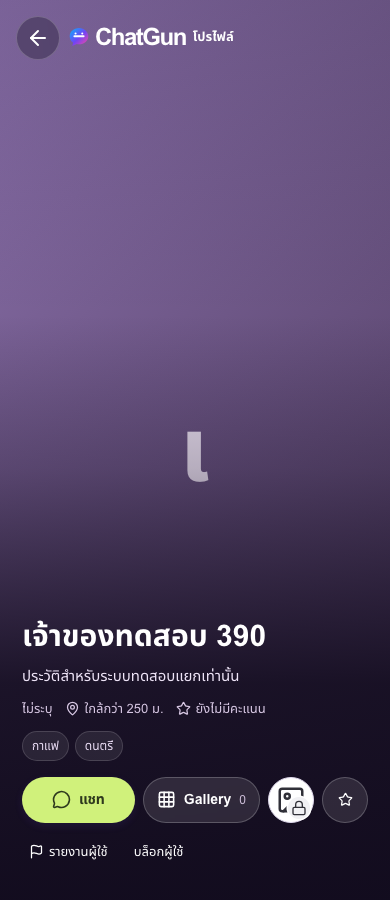
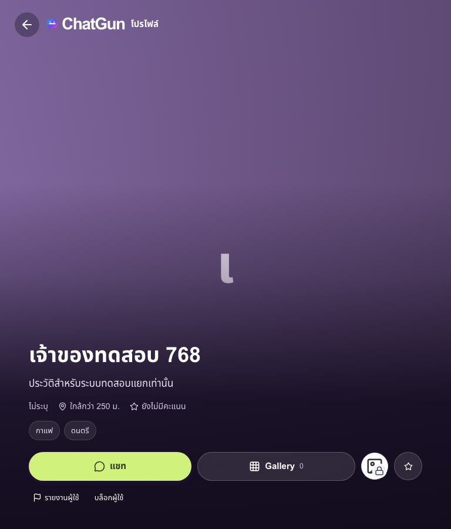
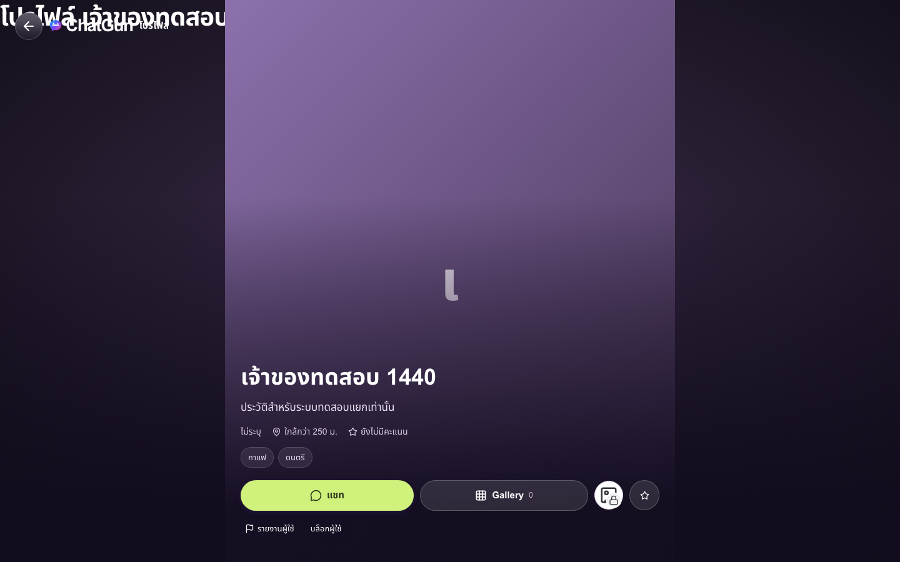
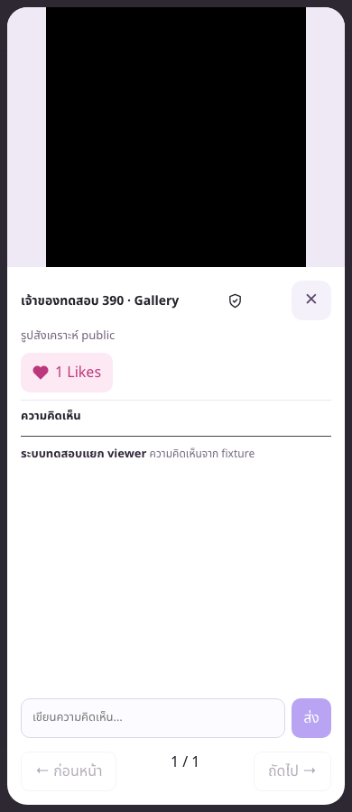
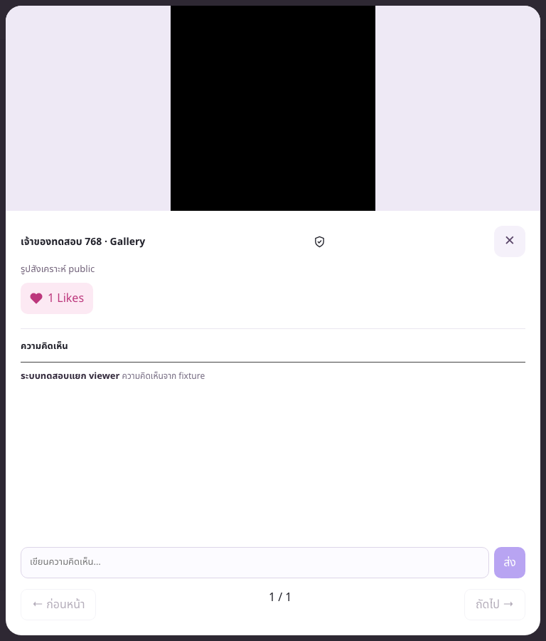
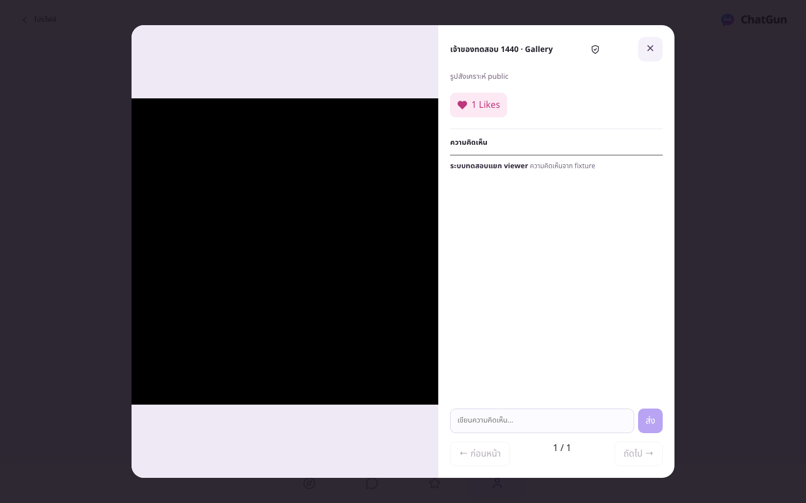
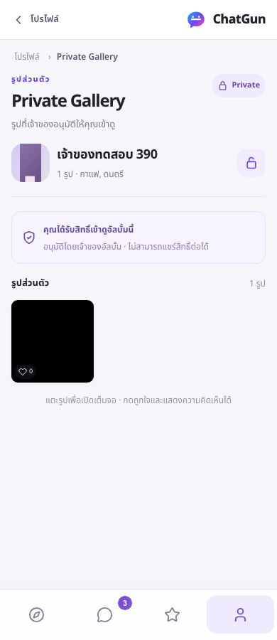
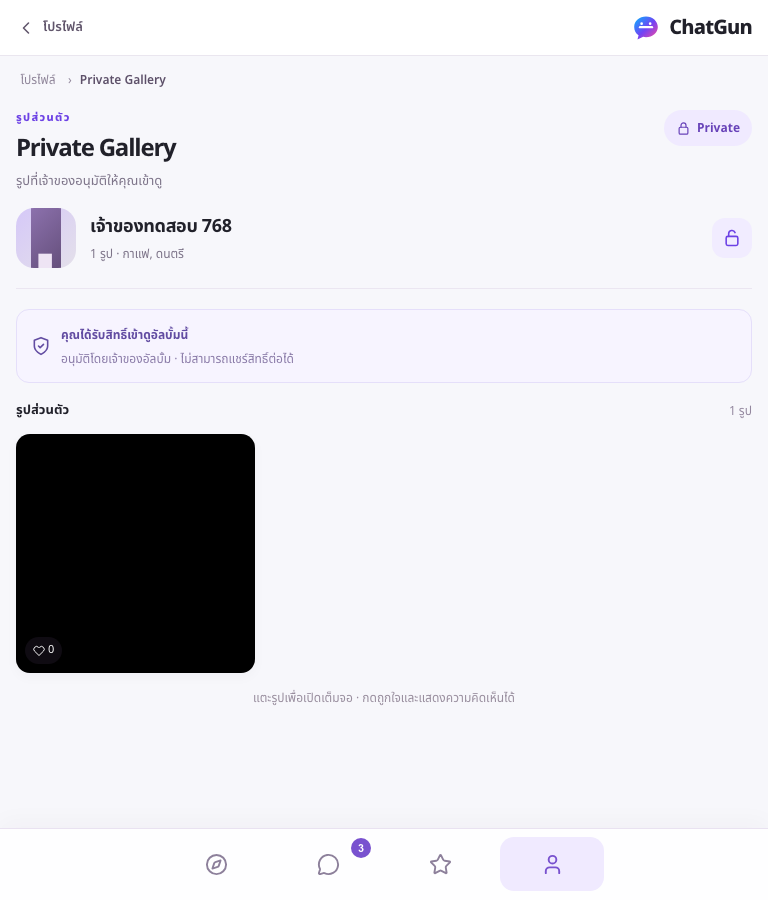
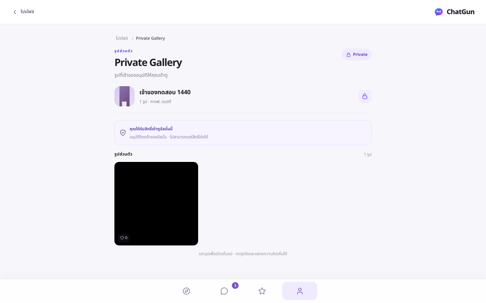
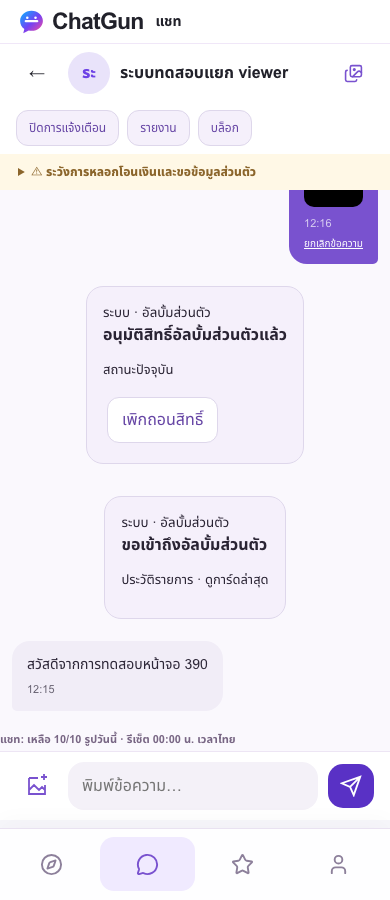
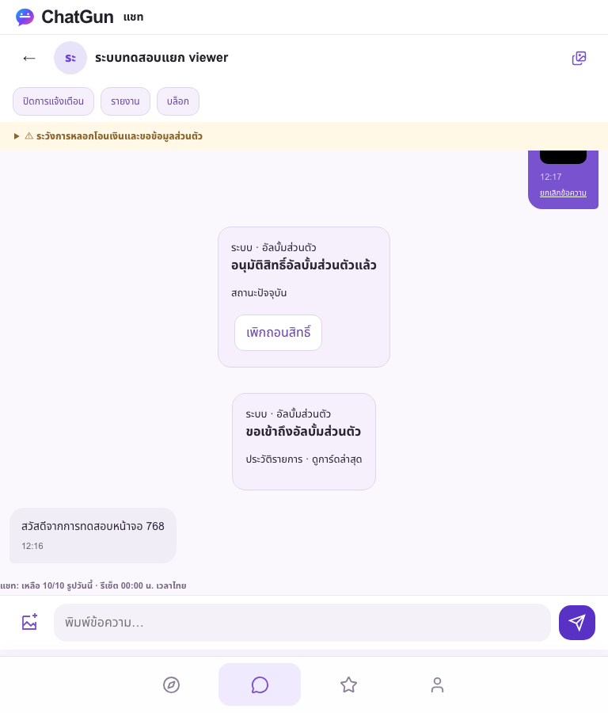
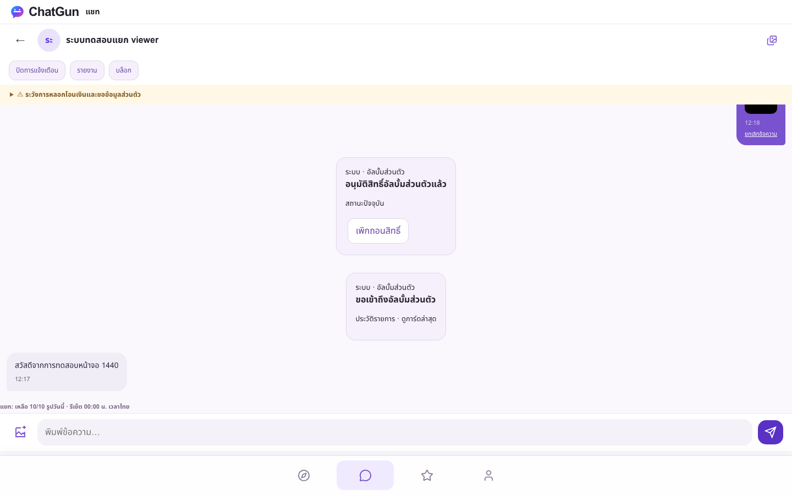
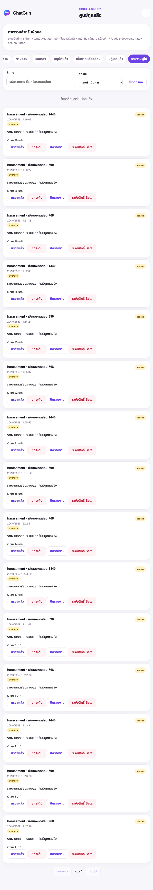
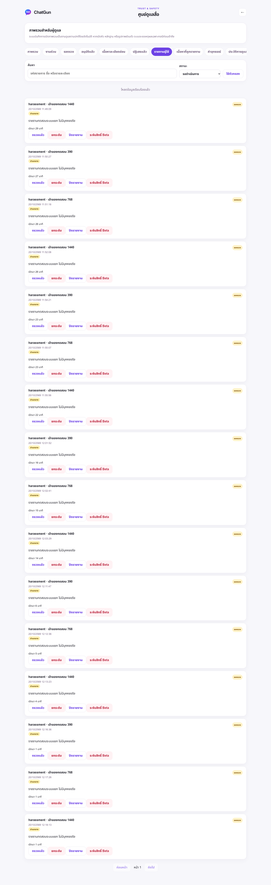
Device notifications เป็น opt-in ขณะเปิดแอปใน foreground เท่านั้น ไม่ใช่ Web Push เมื่อปิดแอป การแจ้งเตือนถาวรยังอยู่ใน backend ตามสิทธิ์
Release checks แบบ closed-prelaunch ผ่าน 35 ข้อบน application SHA เดียวกัน ทั้งนี้ไม่ได้ deploy build ดังกล่าวไป Production
Development complete สำหรับการเตรียม consolidated UAT; NO-GO สำหรับ expanded Production/public launch จนกว่า genuine UAT และ approvals จะครบ ระหว่างนี้เก็บ owner pilot เดิมไว้ ไม่มีคำสั่งให้เจ้าของ login ทดสอบทีละฟีเจอร์